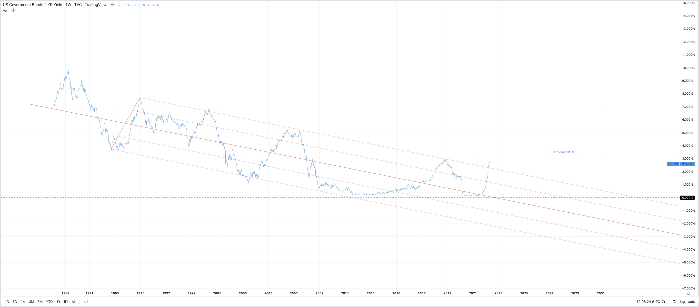
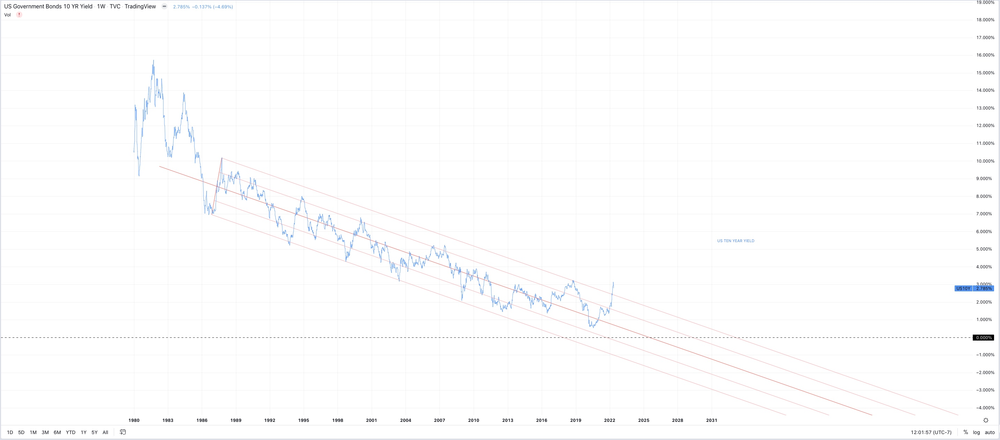
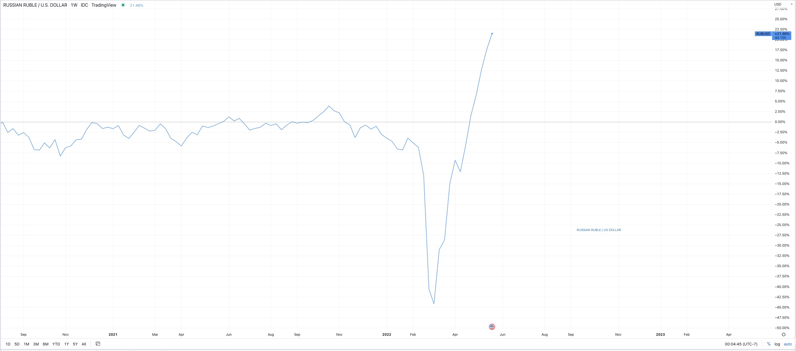
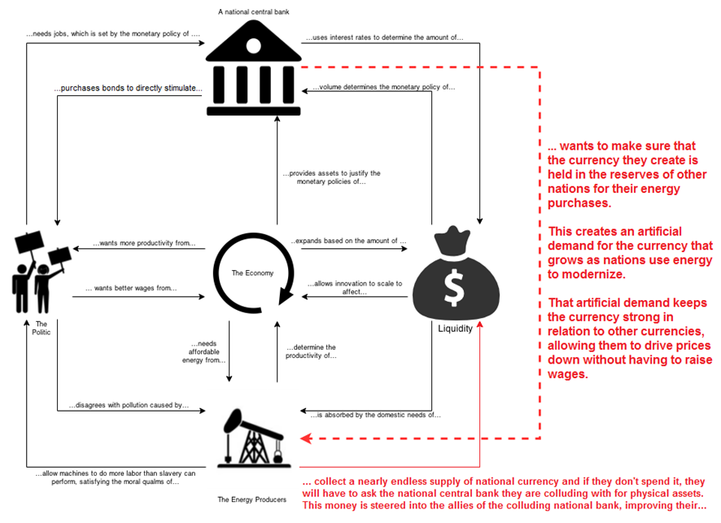
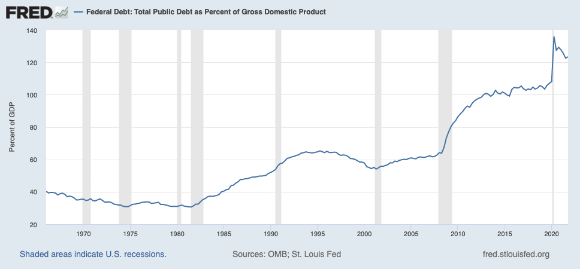
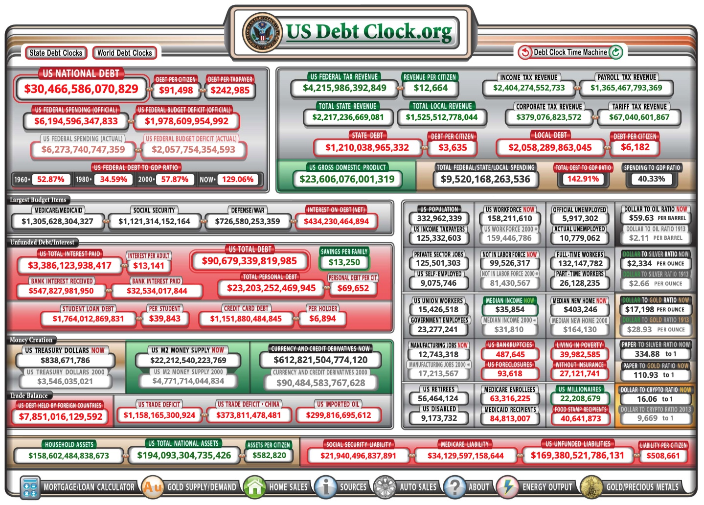
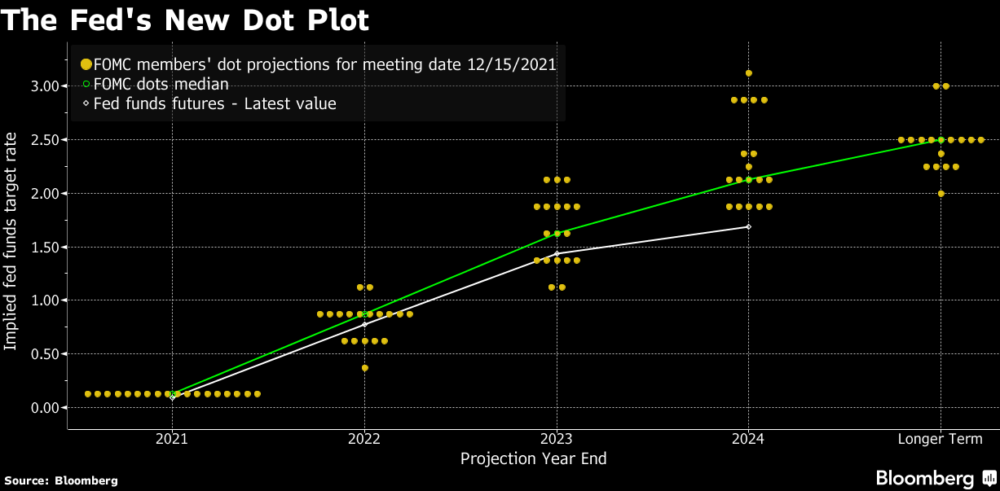
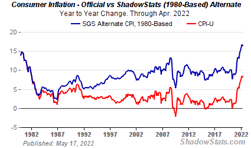
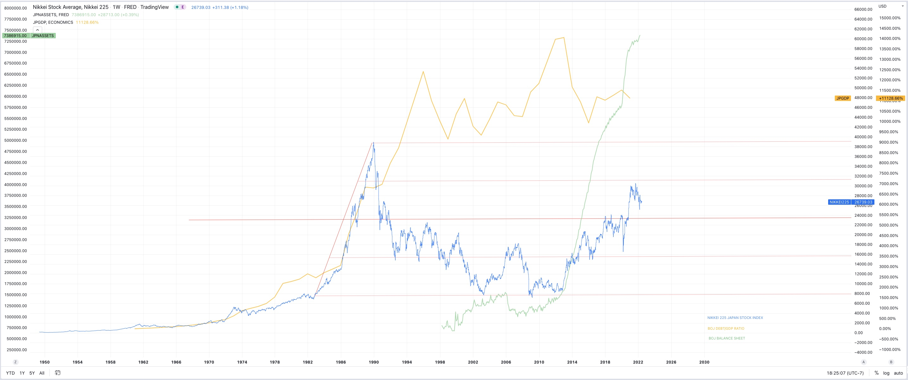
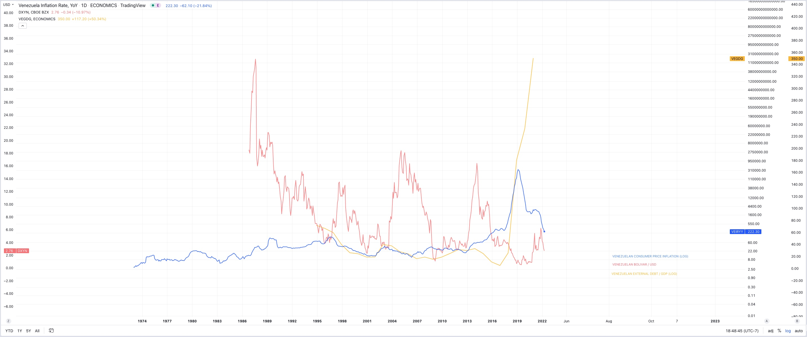

Modern Monetary Theory - Slow at first, then all at once.
An article by Tyler Young.
Tylerisyoung.Substack.com
Twitter.com/TylerisYoung
_________________________
05/23/2022
The goal of Modern Monetary Theory is to create a debt driven monetary hegemony that can only be rectified through its achilles heel - Inflation.
TODAY’S ECONOMIC REGIME
Modern Monetary Theory (MMT) is a macroeconomic framework largely developed by the American Economist Warren Mosler, the theory separates government spending from currency reserve constraints and tax revenue, thus introducing new currency by fiat. In short, this currency is created alongside the federal reserve’s purchasing of government treasuries, and an increase in banking system reserve balances. The FED gets US Treasuries (UST) or Mortgage backed securities (MBS) on their balance sheet, and the treasury can issue more bonds. As it goes for the participants, this process is not thought of as financing government spending, but a means of offsetting it. Building upon the more fundamental Kenysian framework, MMT goes a few questionable steps further advocating for perpetually low, or zero interest rates, floating exchange rates, and government spending to achieve full employment at which point taxes can be raised to solve any deficit problems. However, the deficit is, according to MMT advocates, not a big deal, in fact, a small deficit, let alone a surplus could supposedly even cause a recession, because deficit spending leads to full employment and greater financial stability at the individual level.
Unemployment on the other hand, is the result of government’s spending too little while continuing to collect taxes, and for those who continue to remain unemployed argue MMT followers; They should be given minimum wage jobs funded by the government, the primary aim in this Mosley and his disciples will say, is to limit inflation in the economy. Inflation is the widely accepted, and primary flaw of MMT. As the economy moves towards full employment, inflation will increase, more wages, more dollars in peoples pockets, more demand and a rise in price for goods subject to price elasticity.
This set of idealistic mechanisms can certainly be a good thing if we experience short term issues with financial plumbing, or for example are forced into a war. The 2008 Great Financial Crisis would have played out much differently if we had remained a country dedicated to free market capitalism instead of the new regime of too big to fail, deflation was not an option. There are no easy decisions.
The basis of MMT in today’s system is a head game, the current aim of higher interest rates and a stronger dollar are merely a rouse for foreign investors to dump their weaker currencies in exchange for consistent demand in the only trusted global currency - the US dollar. In this scenario, the United States can shore up malinvestment across the globe while giving officials room to later continue the necessary increase in the deficit, as directed by MMT, despite continually growing foreign obligations. This only works because of an implicit trust that they will not let one of two scenarios play out; Deflation, or Default. The world relies on us to choose a middle ground between them.
MMT works for now because fundamentally, technology and the majority of our modern economic system, is deflationary. Technology, especially disruptive technology that creates step changes in society brings greater efficiencies often by eliminating human labor. As our technology gets better and better, often following both compounding and exponential adoption curves, our world becomes more and more deflationary, giving central banks more room to print money without worry. Things like fertilizer, pesticides, and mechanized farming across the globe have freed billions of people from manual labor, allowing them to specialize, and focus on more productive aims which further drive human flourishing, niche driven complexity, and ultimately wellbeing into the world and economy. For the last decade, MMT has been effective at this aim.GLOBAL HEGEMONY
Developing nations are willing to participate, especially if they are rich in natural resources they can trade for UST’s which are stronger than their native currency. Additionally, as we learned from the extensive work and journalism from economist Milton Friedman, workers in developing nations are legitimately happy to make marginal improvements in their lives by accepting low wage (for western standards), often industrial jobs in cities, leaving their former lives of subsistence farming behind and building a better future for their families. This productivity cycle is widely accepted to create more wealth and wellbeing for developing nations and their citizens. This process should of course be regulated for worker safety, satisfaction, and willingness to participate, which have all improved drastically in the last 100 years. This process of global development should be celebrated instead of shamed by westerners who have already ‘made it’.
Countries who owe debts in USD will simply print more money, devalue their own currency, and continue until something breaks. In the short term, US citizens will benefit from the dollars strength, artificial or not, while it is continues to be backed by the the enforcement of free trade through the petrodollar and war facilitated by the US military industrial complex recently and currently involved in proxy wars and coups across the world including: Syria, Libya, Iraq, Afghanistan, Pakistan, Yemen, Venezuela, Bolivia, Somalia, and now Ukraine, these places have a few things in common, and without war, they threaten the incentives to keep the record spinning.
Syria is significant because of the OPCW scandal which has recently come to light. Chomsky says raises “very severe suspicions,” the coverup has been widely reported on by Aaron Mate, solidifying the US and United Nations willingness to lie to the world in order to facilitate regime change. Additionally, Libya is significant because Qaddafi wanted to create a new Pan-African currency that he could trade for oil, instead of having to continually capitulate into strengthening a constant demand for Dollars via oil. We can’t have him doing that, can we?NEGATIVE REAL YIELDS
The worst of all scenarios; Default, occurs when one party no longer has the ability to deliver on its promises. Default would mean a rush to sell UST’s into an illiquid credit market, as defaults spread throughout the system, the only real currency would be actual physical dollars, which would also create a deflationary event that would be catastrophic, likely much worse than even hyper inflation.
It is important to note that a free market interest rate finds an equilibrium for these treasuries, creating a ‘yield curve’ which typically rewards holders higher interest rates if they hold treasuries longer. The only thing which threatens this equilibrium is inflation, earning the current rate on long term bonds very well may not out pace inflation. This phenomena causes yield curve inversion, where the short term bonds have a higher interest premium than do long term ones. Every time the yield curve inverts, we see a recession, it briefly inverted a few months ago and is threatening to do so again, we are already in a recession, but state media has been reluctant to announce it thus far.
The rate of return on both 2 year treasury yield (2.5% at the time of writing), and the 10 year (2.78% at the time of writing) currently have real rates of return that are undoubtably far in the red. The question to ask then is; If, and when, the longer term yields reach historic resistance to the up side and eventually go down, are they going down for the good reasons - inflation expectations going down, or the bad reasons - growth expectations going down. The difference is critical.
 
Despite negative real yields, there really is no alternative to holding ‘risk free’ UST’s, the European Central Bank (ECB), and the Bank of Japan (BOJ) are printing just the same, so nation-states with weaker currencies simply buy UST’s which maintain a stronger peg relative to their local currency. However, a few key nations are becoming unwilling to continue holding them, winding down their purchases like China, or completely selling off their holdings like Russia who was formerly one of the largest holders of UST’s.
The largest holders of US Treasury bills are Japan (1.3T), China(1T), and the UK(600B), Hong Kong also holds (215B). We owe these countries a lot of money. Interestingly enough, these holders have changed over recent decades.ECONOMIC WARFARE
Russia now holds mainly gold, and of course, oil, which seems to be going pretty well for them. As of mid 2022, the Ruble is significantly stronger than the Dollar, which is comparatively strong relative to all all other currencies, and they are able to charge whatever they want for their oil, in addition to enforcing a system of payments in Rubles, not dollars. Even before the Russia-Ukraine war, Europe was ‘energy poor’, unable to keep up with oil and gas price inflation due to their negative rates and continued money printing. Commodities will always have price elasticity measured against inflation. Citizens have been spending higher and higher percentages of wages on oil and gas for years, and recent sanctions on Russian oil is not helping. The Eurozone was headed into recession regardless, and Putin, like any good economist, knew this last year.
This is what energy dependence looks like, and despite the narrative of putting up with higher gas prices so that we can “stick it to Putin,” these sanctions from the west, like all sanctions for all of history, are only bolstering Russia’s position, and self sabotaging individual citizens at home. A completely regressive policy decision under the worst economic circumstances imaginable. This error is apparent when comparing the Ruble/USD pair, regardless of what is happening on the ground, despite misinformation and propaganda, Russians are currently winning the war against the west.

Similarly, the United States largest trading partner in the middle east, Saudi Arabia is faltering on their historic partnership with the west, threatening the oil soaked war torn bedrock of the petrodollar, UST reserve system described by Zerohedge.

This reserve system, driven by Saudi Arabia, enforces constant saving and buying pressure on UST’s as OPEC forces all nations to buy oil from them in USD, however the tides are turning. Saudi Arabia has recently brokered a deal with China to buy oil in their native Yuan, a move predicted by Zoltan Pozsar even if his predictions about a “Bretton Woods Three,” where the world turns to a multi-asset reserve system are still somewhat premature due to the “Dollar Milkshake” that will likely play out prior where all weaker currencies fall to the USD. This slow transition away from the petrodollar is marking the beginning of the end for the dominance of USD.
Another potentially more ominous signpost for the stability of this economic head-game came in early 2022 when the United States effectively* defaulted on its UST denominated obligations to Russia by freezing $300B, roughly half of their assets held overseas. Russia was clearly correct in their foresight to dump their UST’s in favor is an increase in gold reserves. Treasury Secretary Janet Yellen later came out claiming that what they did was actually both unprecedented, and illegal, so they will now attempt to mandate those funds to pay for all the Ukraine aid the US has already printed and donated - $53B so far since Russia invaded Ukraine. A soft default.
There is also apparently an additional new and also unprecedented policy of seizing the assets of Russian businessmen. President Biden announced a “KleptoCapture” task force which would aim to seize assets of businessmen associated with the Russian government and trans-national corporations. Typically this is done publicly in the court of law with a provision of evidence of corruption and influence over Putin’s decision to invade Ukraine, but even for nations like the US that are not directly involved in the Russia-Ukraine conflict, these are potentially considered exigent circumstances which warrant these actions. This increasing nationalization of goods was accurately forecast by Ayn Rand in Atlas Shrugged.
Furthermore, once these confiscated goods are sold at auction, the funds will be used to fund government programs, not because they actually serve the downtrodden which they claim to - any number of retroactive studies on this demonstrate the vast majority of these programs to be ineffective at their stated goals - for the real aim, according to MMT is to achieve full employment via government intervention, through contractors, state, and federal jobs programs.
This sort of behavior is to be expected in the final days of a fiat currency and a formerly dominant hegemony, yet free markets and free trade with delicate regulation are still the best and most effective thing we can do to encourage the human and planetary flourishing. This is demonstrated by the Copenhagen Consensus Center in their cost-benefit analysis of the United Nations Sustainable Development Goals. In corrupting the foundational incentives of the west for short term benefit, or in order to punish the east, we are playing a dangerous game.
The only thing that could burst this bubble would be a series of defaults, real defaults, which we know will never happen under the US Regime, inflation is the release valve.
Inflation is the achilles heel of MMT, and the current period of stagflation, persistent and sticky inflation without a growth in GDP, is as bad as it gets. What the crude economic theory of MMT fails to recognize is that inflation is always a monetary phenomenon. More dollars chasing fewer goods will destroy markets and supply chains as we have seen.
The tools to combat this are based in demand destruction to absorb that dollar liquidity, one method is recessionary demand destruction. Recession increases unemployment, lowers savings accounts, and crushes demand. The second way is raising interest rates which lessens the borrowing power of companies and individuals who use credit for cars and homes, thus higher borrowing rates crush demand. Lastly, higher prices as as result of the monetary phenomenon of inflation, always, always, crushes demand.UNKNOWN TERRITORY
The circumstance we currently find ourselves in marks what could end up being the final straw that broke the camels back, or more likely a foreboding to an inevitable future.
The problem for the United States and other developed countries is that they can only become more and more beholden to their own balance sheets until an unraveling happens. The US Debt/GDP ratio peaked out in 2021 at 133% and is now declining as we slide into demand destruction and recession.

We passed the national debt ceiling maximum two years ago, which has happened several times before. We currently have a debt/GDP ratio of 122%, the highest of any country ever which has not experienced hyperinflation, or gone into default. We have been slowly entering a debt spiral since 2008, and no one appears to care, because a US backed default would mean a global financial collapse that would pail in comparison to the great recession, or the great depression.
This would not have been possible if the world had remained on the gold standard, and while it can be argued that we have benefited in the short term, and maybe the long term, from the printing of money backed by nothing, there has never been a successful fiat financial system, and all fiat has eventually gone to zero.
The United States is currently on the brink of insolvency because our upper bound on money printing is being tested as we speak. The inflation seen today is a result of the unprecedented increase in M2 money supply seen since 2020. It is not in large due to supply chain issues from Covid, or Putin, it is from printing 27% of all money that has ever existed out of thin air and spending it into the market while interest rates remain low to encourage even more borrowing. Today, our official national debt is $30 trillion, and the net interest payments are upwards of $400 Billion and continually increasing as our gross GDP is only $22 Billion, therefore our budget remains in a deficit and the DEBT/GDP ratio widens.
The current running US annual spending is $6.1T while total tax revenue is $4.2T, leaving us with a budget deficit of $1.9T. The largest budget expendatures are Medicare & Medicaid ($1.3T), Social Security ($1.2T), Defense Spending ($730B), and Net Interest on the debt itself ($430B).
The first three are obligations which the US cannot easily decrease, and it is further unfortunate that the entirety of social security and Medicaid obligations are held in funds mandated to purchase US treasuries which are currently returning negative real yields, a crisis yet to be atoned for. The last category, however, interest payments is the most critical when discussing MMT.

Interest on 30 trillion dollars is a lot, and the government is forced to pay whatever interest rates are set by the federal reserve. Currently the target FED funds rate is 0.75-1.00%. This is up from the 2020 low of 0.25%, and the long term target rate is ~2.5%. Much of the hiking is done through announcements and jawboning the market downward in displays of hawkishness to avoid actually raising rates which inevitably hurts markets, destroying demand.

Even at 2.5%, interest rates would be historically low, especially in an environment of high inflation. The last time a period of high inflation occurred, interest rates were promptly raised to match the level of inflation. The legendary Paul Volker raised rated to match inflation, rates peaked out at 17.78% and inflation was brought down because of it. This was done in the 70’s, at a time when the debt/GDP ratio was still under 40% meaning that rates at 17% would not cripple the governments ability to remain solvent on its debt payments.
Today, raising interest rates to the rate of inflation would not be possible. The official CPI inflation rate released by the BLS is 8.3%, down from a peak of 8.5% year over last month. This is to say nothing of the unexplained continual changes in the calculation methodology, or the Shadow Stats calculation, using historical methods which were in place until only a few years ago which currently pegs inflation above 16%.

A FED funds rate at 16% would mean an extra $4,800,000,000,000 ($4.8T) added to the budget every year, which would mean more deficits, and more interest, a proper debt spiral. This is untenable.
Many economists today peg the upper limit for interest rates around 3% before the party begins. The ECB is already dealing in negative rates and that chapter has yet to conclude. Japan is participating in their own experiment where the government deficit is forever growing, and the BOJ has begun yield curve control, preventing treasury yields from rising too high, and even turned to buying equities to prop up the market, the apparent result has been a perpetually increasing balance sheet at their central bank, a seemingly maxed out debt/GDP ratio for their economy, and their stock market indexes continue sideways, without growth, and certainly not outpacing inflation.
The United states is also likely to engage in yield curve control prior to defaulting. Imagine if the S&P 500 didn’t make a new all time high for 30 years, that’s where Japan’s at, and potentially where we’re collectively headed.

As rates rise, investors funds will be preferentially distributed to US markets seeking return instead of stagnation abroad, the ‘Dollar Milkshake’ is on the table until the sovreign debt bubble bursts. It may not come this cycle, or even next cycle, in fact it may not come at all, Venezuela, Turkey, Argentina, and Zimbabwe remind us that hyper-inflation is always an option. The humanitarian case may preferentially demand inflation over deflation, but only time will tell. For better or worse, the US will be the last domino to fall.

This can all be summed up within the chart below, it’s beautiful yet terrifying, I know.

-Tyler
@TylerisYoung